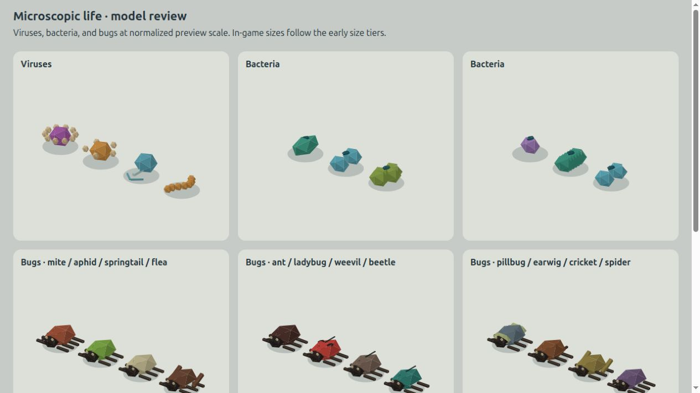
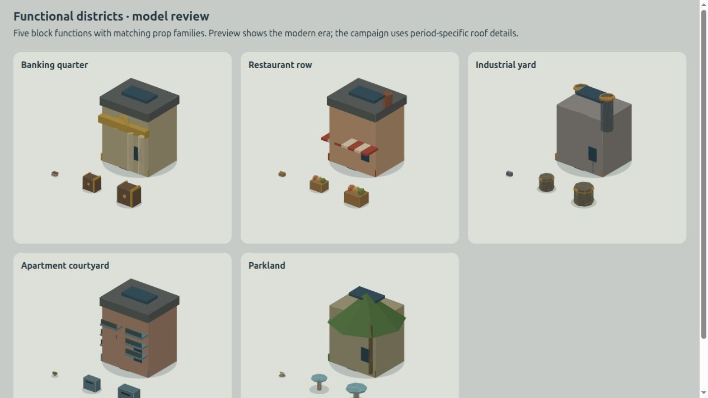
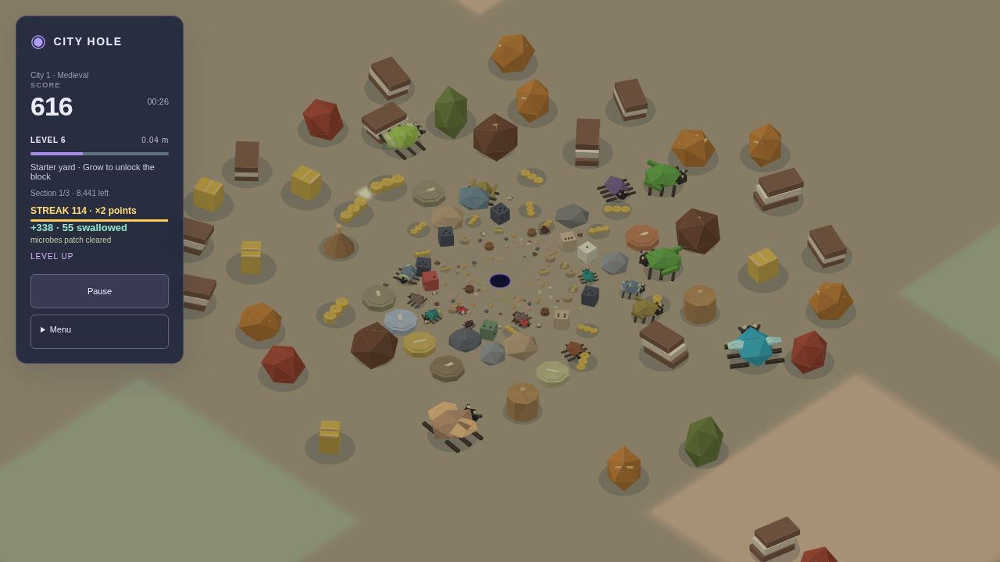

A two-second completion window builds a consecutive-swallow streak: ×1.5 points at three items, capped at ×2 from eight onward. Points round per completion; mass stays unchanged. Aggregate blocks count as a single hit, with their contents inheriting the bonus. Pause freezes the timer and restart clears it. The HUD shows a gold multiplier and shrinking countdown.
Four virus forms, six bacterial forms and sixteen bug species span eight early size tiers. Existing food is converted during initial generation; no food spawns in reaction to play. Bug speeds and patrol ranges follow their size. Microbes are stylized gameplay representations, not scientifically scaled microscopy.

Banking quarters use columns and coin crests; restaurant rows use awnings and chimneys; industrial yards use stacks and loading doors; apartment courtyards use balconies; parks use pavilions. Each function has five prop scales and whole-block models preserve its identity. Campaign eras use different roof hardware. The starter area keeps most original food forms, with themed props as accents, while city blocks use the full district palette.

The rendering threshold is now L−20, including the capture path. Actor scheduling and obsolete-food consumption retain their separate performance policies. The 105 core tests cover exact-once bonuses, expiry, caps, aggregate handling, life diversity, district identities and rendering thresholds. Production build passed with the existing Three.js chunk-size warning.
| Trial | Completion | Objects generated during play |
|---|---|---|
| Medieval | 222.4s | 0 |
| Industrial | 222.0s | 0 |
| Modern | 236.2s | 0 |
| Futuristic | 231.4s | 0 |
These are deterministic real-loop simulation trials with drawing disabled, not hardware FPS benchmarks. Browser checks confirmed the live streak display, opening creatures and model galleries with no console errors. Full measurements.
